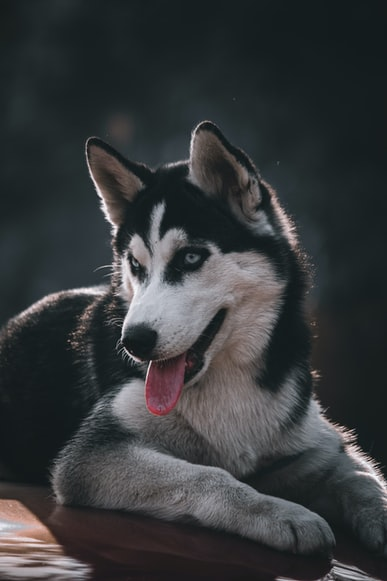
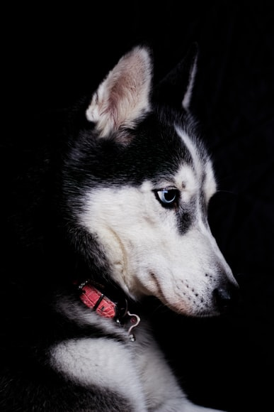

Husky Siberiano
Da família Canis lupus familiaresSeu nome revela sua origem, que é a Sibéria, há dois mil anos. Desempenhava primordialmente a função de puxar trenós com diversas mercadorias, já que possuíam grande resistência ao frio e uma força tremenda.
Em 1909, William Goosak levou huskys até o Alaska para participar da Grande Corrida do Alasca, com um percurso de 657Km, por sua performance impressionante, um grnade foco se voltou para a raça.
Foi em 1925 que, a raça ficou muito conhecida, quando a cidade de "Nome" foi arrasada pela difteria, quando um grupo de huskys levaram medicamentos para a aldeia no meio do inverso rigoroso e fortes tempestades de inverno.
O momento ficou eternalizado como "Corrida do Soro de Nome". Tão memorável foi esse feito que, na década de 90, o filme "Balto" retrata sobre essa raça e sobre o acontecimento.
“Analisei a raça de cães husky siberiano, e acho que sou como eles, eles têm um instinto interessante, são amigáveis, respeitadores, amorosos, se apegam fácil, são da paz, não são da zoada, se chamam atenção são por outros aspectos, mas se os deixam solto, se não o valorizam eles...”
- Surgiu: 2.000 anos
- Tipo: Mamífero
- Idade média: 15 anos
- Macho adulto: 20 - 27Kg
- Fêmea adulta: 16 - 23Kg
- Família: Lupus
No Brasil há uma predominância do calor em toda região, contrariando ao costume de viver em baixas temperaturas do Husky Siberiano. Esse animal se assemelha aos lobos, mas não possuem um instinto primordial, pelo contrário, são amigáveis e fáceis de lidar.
São cachorros muito enérgicos, necessitando de bastante esforço físico São brincalhões, adoram brincar por várias horas, muito apegado à família, por possuírem muita energia, podem fugir para gastá-la na rua, além de serem independentes, demandando pouca atenção dos donos.